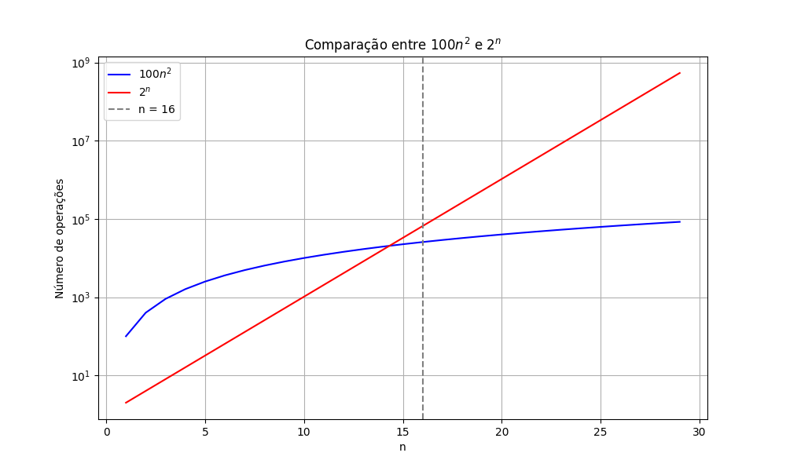
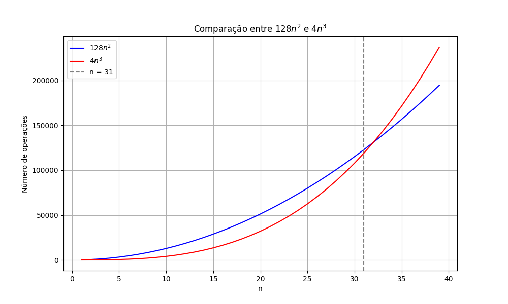

Exercícios Propostos - Aula 05
Felipe Fazio da Costa
RA: 23.00055-4
Disciplina: ECM306 - Tópicos Avançados em Estrutura de Dados
Exercício 1
public class InsertionSort {
public static void insertionSort(int[] array) {
for (int i = 1; i < array.length; i++) {
//2 + 3*(n + 1) + 4n operações
int key = array[i];
// 5n operações
int j = i - 1;
// 4n operações
while (j >= 0 && array[j] > key) {
// 4*(n+1)^2 + 5*(n+1)^2 operações
array[j + 1] = array[j];
// 5n^2 + 4n^2 operações
j = j - 1;
// 4n^2 operações
}
array[j + 1] = key;
// 6n operações
}
}
public static void main(String[] args) {
int[] array = {12, 11, 13, 5, 6};
System.out.println("Array antes da ordenacao:");
for (int num : array) {
System.out.print(num + " ");
}
insertionSort(array);
System.out.println("\n\nArray depois a ordenacao:");
for (int num : array) {
System.out.print(num + " ");
}
}
}
Exercício 2
Análise de Complexidade:
Esse algoritmo tem o seguinte número de operações:
-
Linha 1:
for (int i = 1; i < array.length; i++)- 2 + 3*(n + 1) + 4n operações
-
Linha 2:
int key = array[i];- 4n operações
-
Linha 3:
int j = i - 1;- 4n operações
-
Linha 4:
while (j >= 0 && array[j] > key) {- 4*(n+1)^2 + 5*(n+1)^2 operações
-
Linha 5:
array[j + 1] = array[j];- 5n^2 + 4n^2 operações
-
Linha 6:
j = j - 1;- 4n^2 operações
-
Linha 7:
array[j + 1] = key;- 6n operações
Equação final:
Exercício 3
Código Java:
import java.util.Scanner;
public class TarefaT3_01 {
public static void main(String[] args) {
Scanner in = new Scanner(System.in);
int n = in.nextInt();
System.out.println(Func(n));
in.close();
}
public static int Func(int n) {
int m = 0;
for (int i = 1; i <= n; i++) {
for (int j = 1; j <= n; j++) {
m = m + 1; // Linha 1
}
}
return m;
}
}
Análise de Complexidade:
Esse algoritmo tem o seguinte número de operações:
- Linha 1:
m = m + 1;- 4*n^2
Equação final:
Exercício 4
Código Java:
import java.util.Scanner;
public class TarefaT3_02 {
public static void main(String[] args) {
Scanner in = new Scanner(System.in);
int n = in.nextInt();
System.out.println(Func(n));
in.close();
}
public static int Func(int n) {
int m = 0;
for (int i = 2; i <= n; i++) {
for (int j = 2; j <= n; j++) {
m = m + 1; // Linha 1
}
}
return m;
}
}
Análise de Complexidade:
Esse algoritmo tem o seguinte número de operações:
- Linha 1:
m = m + 1;- 4*n^2 - 1
Equação final:
Exercício 5
Código Java:
import java.util.Scanner;
public class TarefaT3_03 {
public static void main(String[] args) {
Scanner in = new Scanner(System.in);
int n = in.nextInt();
System.out.println(Func(n));
in.close();
}
public static int Func(int n) {
int i = 4;
int m = 0;
while (i <= n) {
m = m + 1; // Linha 1
i = i + 2;
}
return m;
}
}
Análise de Complexidade:
Esse algoritmo tem o seguinte número de operações:
- Linha 1:
m = m + 1;- (4*n)/2 + 1
Equação final:
Exercício 6
Código Java:
import java.util.Scanner;
public class TarefaT3_04 {
public static void main(String[] args) {
Scanner in = new Scanner(System.in);
int n = in.nextInt();
System.out.println(Func(n));
in.close();
}
public static int Func(int n) {
int i = 4;
int m = 0;
while (i <= n) {
m = m + 1; // Linha 1
i = i * 2;
}
return m;
}
}
Análise de Complexidade:
Esse algoritmo tem o seguinte número de operações:
- Linha 1:
m = m + 1;- 4 * log(n)
Equação final:
Exercício 7
Código Java:
import java.util.Scanner;
public class TarefaT3_05 {
public static void main(String[] args) {
Scanner in = new Scanner(System.in);
int n = in.nextInt();
System.out.println(Func(n));
in.close();
}
public static int Func(int n) {
int m = 0;
for (int i = 1; i <= n; i++) {
for (int j = i; j <= n; j++) {
m = m + 1; // Linha 1
}
}
return m;
}
}
Análise de Complexidade:
Esse algoritmo tem o seguinte número de operações:
- Linha 1:
m = m + 1;- 4 * n * (n+1)/2
Equação final:
Tabela analisada:
Para chegar nas conclusões, foi feita a análise conforme o tempo

Exercício 8
Supondo-se que se está comparando implementações de ordenação por inserção e ordenação por intercalação na mesma máquina. Para entradas de tamanho n, a ordenação por inserção é executada 8n2 etapas, enquanto a ordenação por intercalação é executada em 64n ln n etapas. Para que valores de n a ordenação por inserção supera a ordenação por intercalação?
| n | Insertion Sort Steps(8n^2) | Merge Sort Steps(64n*ln(n)) | Insertion < Merge |
|---|---|---|---|
| 1 | 8 | 0.0000 | False |
| 11 | 968 | 1688.1183 | False |
| 21 | 3528 | 4091.8382 | False |
| 27 | 5832 | 5695.2061 | True |
| 31 | 7688 | 6813.0306 | True |
| 41 | 13448 | 9744.4131 | True |
| 51 | 20808 | 12833.4789 | True |
| 61 | 29768 | 16048.8516 | True |
| 71 | 40328 | 19369.6174 | True |
| 81 | 52488 | 22780.8244 | True |
Pela tabela podemos ver que o código de inserção supera com n = 27 ordenação por intercalação.
Exercício 9
Qual é o menor valor de n tal que um algoritmo cujo tempo de execução é 100n2 funciona mais rápido que um algoritmo cujo tempo de execução é 2n na mesma máquina?
| n | 100n² | 2ⁿ | 100n² < 2ⁿ |
|---|---|---|---|
| 1 | 100 | 2 | False |
| 2 | 400 | 4 | False |
| 3 | 900 | 8 | False |
| 4 | 1600 | 16 | False |
| 5 | 2500 | 32 | False |
| 6 | 3600 | 64 | False |
| 7 | 4900 | 128 | False |
| 8 | 6400 | 256 | False |
| 9 | 8100 | 512 | False |
| 10 | 10000 | 1024 | False |
| 11 | 12100 | 2048 | False |
| 12 | 14400 | 4096 | False |
| 13 | 16900 | 8192 | False |
| 14 | 19600 | 16384 | False |
| 15 | 22500 | 32768 | False |
| 16 | 25600 | 65536 | True |

Gráfico com plot com log para melhor visualização
Pela tabela podemos ver que é no valor 16 o código de 2^n supera o 100n^2.
Exercício 10
Considere dois algoritmos A e B com complexidades respectivamente iguais a 128n2 e 4n3. Qual o maior valor de n, para o qual o algoritmo B é mais eficiente que o algoritmo A?
| n | 128n² | 4n³ | 4n³ < 128n² |
|---|---|---|---|
| 1 | 128 | 4 | True |
| 2 | 512 | 32 | True |
| 3 | 1152 | 108 | True |
| 4 | 2048 | 256 | True |
| 5 | 3200 | 500 | True |
| 6 | 4608 | 864 | True |
| 7 | 6272 | 1372 | True |
| 8 | 8192 | 2048 | True |
| 9 | 10368 | 2916 | True |
| 10 | 12800 | 4000 | True |
| 15 | 28800 | 13500 | True |
| 20 | 51200 | 32000 | True |
| 25 | 80000 | 62500 | True |
| 30 | 115200 | 108000 | True |
| 31 | 123904 | 119791 | True |
| 32 | 131072 | 131072 | False |
| 33 | 139392 | 143253 | False |

Pela tabela podemos ver que o código B é melhor até n igual a 32.
Exercício 11
Considere dois computadores C1 e C2 que executam 108 e 1010 operações por segundo e dois algoritmos de ordenação A e B que necessitam 5n2 e 40n log10 n operações com entrada de tamanho n, respectivamente. Qual o tempo de execução de cada algoritmo em cada um dos computadores C1 e C2 para ordenar 108 elementos?
Passo 1: Definição dos Dados
-
Computadores:
- executa operações por segundo
- executa operações por segundo
-
Algoritmos:
- Algoritmo precisa de operações
- Algoritmo precisa de operações
-
Entrada: elementos
Algoritmo A
Algoritmo B
Passo 3: Cálculo do Tempo de Execução
O tempo de execução é dado por:
Computador C1
Computador C2
| Algoritmo | Computador | Operações Totais | Tempo (segundos) | Tempo Aproximado |
|---|---|---|---|---|
| A | C1 | 5 × 10¹⁶ | 5 × 10⁸ | 15.8 anos |
| A | C2 | 5 × 10¹⁶ | 5 × 10⁶ | 58 dias |
| B | C1 | 3.2 × 10¹⁰ | 320 | 5.3 minutos |
| B | C2 | 3.2 × 10¹⁰ | 3.2 | 3.2 segundos |
Exercício 12
Um algoritmo tem complexidade 2n. Num certo computador, num tempo t, o algoritmo resolve um problema de tamanho 25. Imagine, agora, que se tenha disponível um computador 100 vezes mais rápido. Qual o tamanho máximo de problema que o mesmo algoritmo resolve no mesmo tempo t no computador mais rápido?
Se tivermos um computador 100 vezes mais rápido, ele pode executar:
Para encontrar o novo tamanho máximo do problema , resolvemos:
Aplicando logaritmo base 2 em ambos os lados:
Como e , temos:
Aproximando :
Como deve ser um número inteiro, concluímos que:
Portanto, no computador 100 vezes mais rápido, o algoritmo pode resolver um problema de tamanho no mesmo tempo .